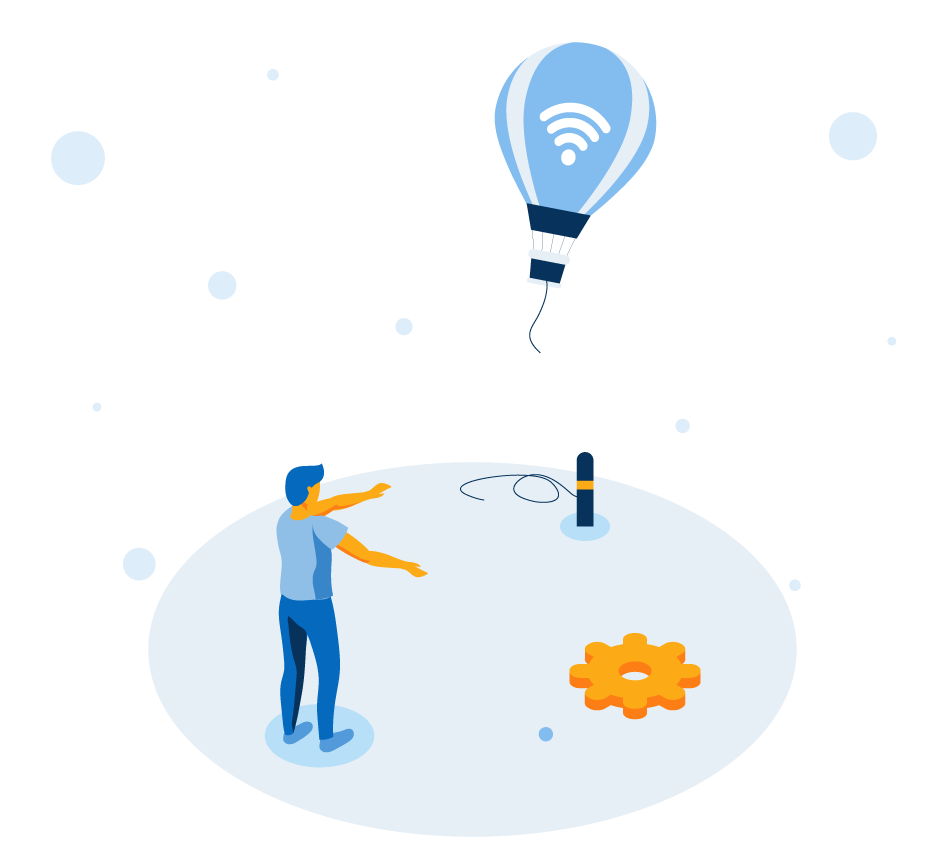

<ion-app>
  <ion-router-outlet></ion-router-outlet>
  <div id="NetError" style="visibility: hidden; transition: 1s; position: absolute;
height: 100%;
width: 100%;
top: 0;
bottom: 0;
left: 0;
right: 0;
background: #ffffff;
display: flex;
    flex-direction: column;
    justify-content: center;
    align-items: center; ">
<div style="display: flex; flex-direction: column; align-items: center; justify-content: center;">
  
  <ion-text style="    text-align: center;
  color: #666666;">
    <h1 style="font-family: Open Sans Bold;
    font-size: 25px;">Ooops!</h1>
    <p style="    font-family: Open sans SemiBold;
    font-size: 14px;">No Internet Connection found<br>Check your connection.</p>
  </ion-text>

  <ion-button (click)="onTryAgainClick()" expand="block" shape="round" style="     --border-radius: 20px;
  font-size: 16px;
  height: 35px;
  --background: linear-gradient(45deg, #00b9ff 0%, #2e4c99 100%);
  --background-activated: linear-gradient(45deg, #00b9ff 0%, #2e4c99 100%);
  --background-focused: linear-gradient(45deg, #00b9ff 0%, #2e4c99 100%);
  --background-hover: linear-gradient(45deg, #00b9ff 0%, #2e4c99 100%);
  color: #ffffff;
  width: 26vh;
  font-family: Open Sans semiBold;
  margin-top: 5vh;">
    <ion-spinner *ngIf="showLoad" name="crescent"></ion-spinner>&nbsp;{{showLoad? 'Connection...':'Try Again'}}
  </ion-button>
</div>


<!-- <ion-card>
      <ion-card-content>
        Awesome content
      </ion-card-content>
    </ion-card> -->
</div>

<!-- <ion-backdrop id="NetError" style="visibility: hidden; transition: 1s;">
  <div>
    
  </div>
</ion-backdrop> -->
</ion-app>
